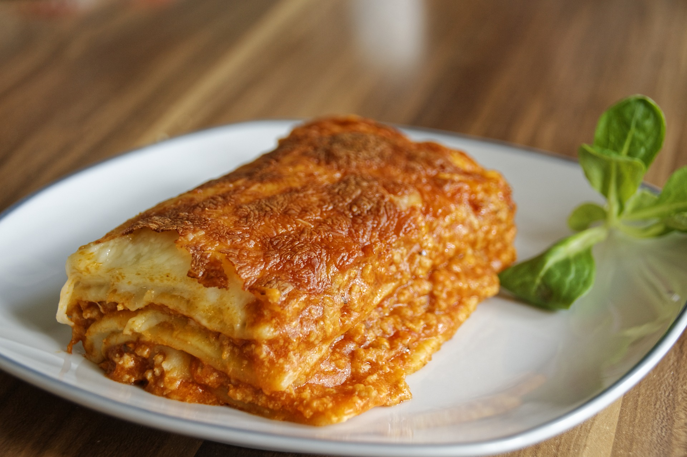

Lasagna

Description
You don’t need to make reservations at a fancy restaurant to enjoy fresh homemade lasagna.
It may seem like a daunting task for you to make your own pasta.
The truth is it really is very simple with just a few ingredients that you may already have in your kitchen.
The taste of fresh pasta can be had at home, and really sets your lasagna apart from the rest.
Feel free to purchase a chef’s hat, but it is not necessary for this recipe.
You will need:
- 2 cups of flour
- 2 large eggs
- 3 large egg yolks
- Some extra flour for dusting
Steps For Fresh Pasta Dough
- Mound the flour in the center of a large mixing bowl.
- Make a well in the center of the mound and add the eggs and yolks.
- Using a fork, beat the eggs until blended, then begins to slowly incorporate your flour.
The dough will start to come together in a shaggy mass.
- Use your hands to mix the dough well. You can add a little bit of water if the dough seems to dry, but not too much.
- Transfer the dough to a clean, floured counter space and knead by hand for 4-5 minutes.
You want the dough to be smooth and elastic.
- Wrap the dough in plastic wrap and let rest for 30 minutes at room temperature.
Steps to Make Noodles
- Cut off a quarter of the dough and rewrap the rest.
- Use the heel of your hand to flatten the dough to a 6 inch strip.
- Set the rollers on your pasta machine to its thickest setting.
- Fold dough onto itself and press together.
- Feed the dough into your pasta machine. You can think of these first rollings as extended kneading.
- Continue until dough sheet is silky smooth and even textured.
- Roll dough sheets through the pasta machine adjusting your setting to make the sheet progressively thinner.
Use some flour if it begins to get sticky. Roll the dough until you can just see your hand through it.
Roughly 1/32 inch thick. This will likely be your thinnest setting.
- Cut the sheets to roughly 12 inches long. Lightly dust with flour to prevent sticking.
- Repeat these steps until you have used all the dough.
Once you have all of your noodles, it is ready to be boiled. Homemade pasta requires less time to boil than dry, store
bought noodles.
Cooking and Final Prep
- Pre heat oven to 350F.
- Bring a large pot of water to boil.
- Add your fresh pasta to the water and boil for about 3 minutes.
- Add sauce to the bottom of your lasagna pan, then add your first layer of noodles.
- The next step is up to your preference. Feel free to add whatever ingredients you like on your lasagna.
Continue to layer noodles, sauce, cheese, and any other ingredient you like until you have used all of your noodles.
- Bake your lasagna at 350F for about 25-30 minutes. Oven times may vary. Bake until cheese is melted.
Serve this with garlic bread and a nice salad. Enjoy your fresh homemade meal!